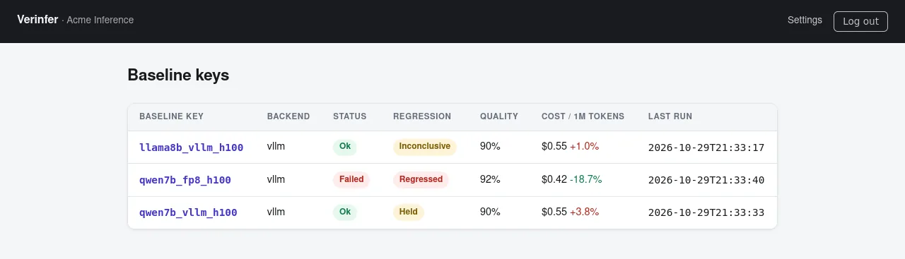
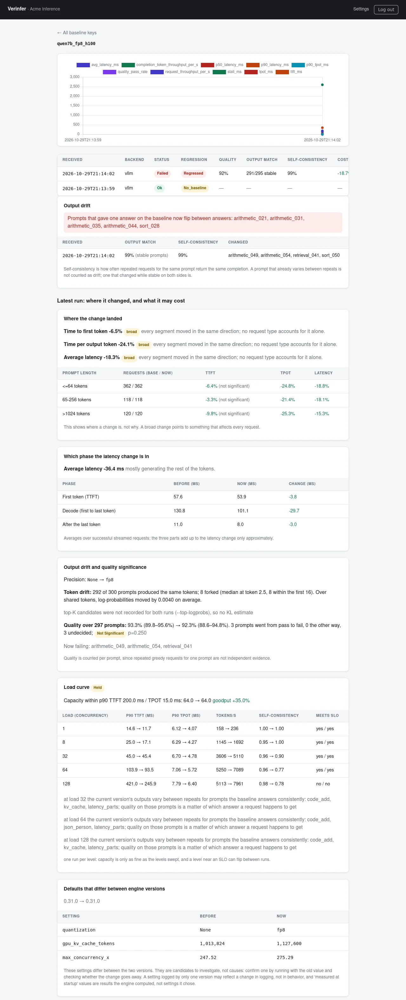
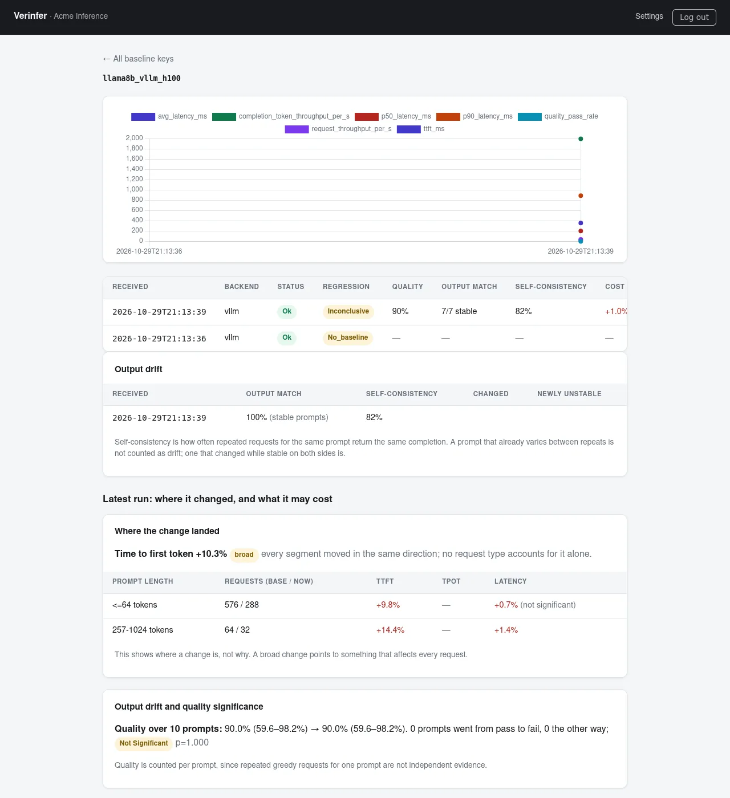
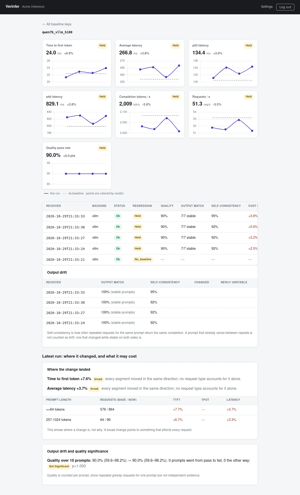
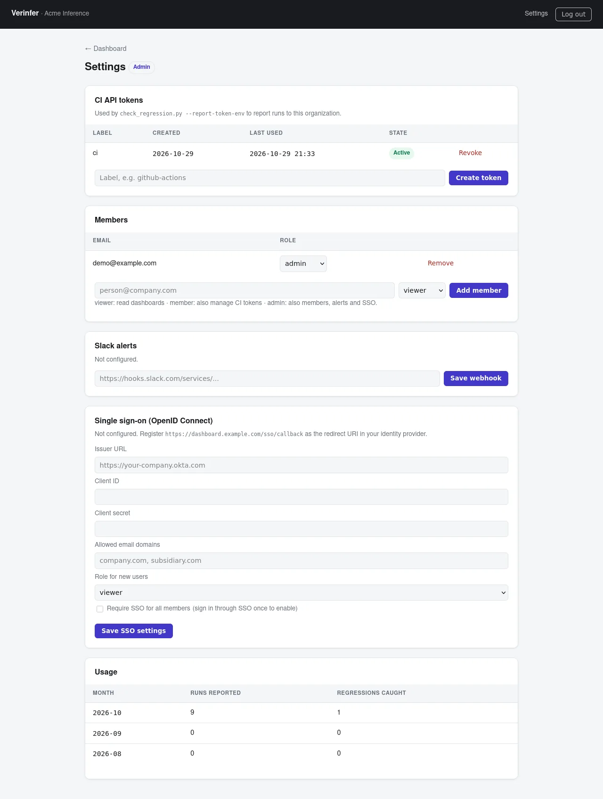

Performance CI for LLM inference.
Your test suite guards correctness. Verinfer guards latency, throughput, output quality, and cost. It benchmarks the real inference service you ship, compares it with the baseline committed in your repo, and fails the build when something actually got worse — not when the GPU had a noisy minute.
SGLang 0.5.19 · Qwen2.5-0.5B · one added flag: --max-running-requests 1
| Metric | Baseline | After | Δ | Verdict |
|---|---|---|---|---|
| TTFT | 260 ms | 1,213 ms | +367% | Regressed |
| p90 latency | 3,863 ms | 2,285 ms | −41% | Improved |
| Throughput | 32.3 tok/s | 54.6 tok/s | +69% | Improved |
| Quality pass rate | 88% | 88% | 0 pts | Held |
| Cost / 1M tokens | $8.61 | $5.09 | −41% | — |
Real service. Committed baseline.
A verdict CI can act on.
Every run starts the actual inference service — not a mock, not a cached profile — and compares it with the baseline versioned alongside your code.
Start the real service
Launch vLLM, SGLang, or TensorRT-LLM the way you deploy it, with your model, flags, and quantization.
Benchmark against the baseline
Repeat a reproducible workload and compare TTFT, TPOT and inter-token latency, throughput, quality, exact-output match, and cost.
Get a verdict that survives noise
Regressed, held, improved, or inconclusive. Thresholds widen to the measured noise, and a rank test can only downgrade a failure, never create one.
Fail the build, alert Slack
A regression exits non-zero and posts to Slack. Every run lands in the dashboard, where slow drift raises its own alert.
Ready-made GitHub Actions workflows
One workflow per engine. Each starts the real service on your self-hosted GPU runner, runs the benchmark several times, and gates with one command — on every deploy-relevant change, nightly, and on demand.
- Hosted dashboard with every run's trend, organizations, roles, and SSO
- Slack alerts on regressions — and on slow drift: output match falling three runs in a row, or self-consistency down 5 points
- Cost per 1M tokens and the projected monthly change on every comparison
- GPU experiments print their worst-case cost first (--dry-run) and refuse to exceed --max-spend-usd
Every run lands in one place.
CI posts each verdict to the hosted dashboard: history per baseline, drift over time, where a change landed, and what it costs. This walkthrough is the real dashboard loaded with the reports from our case studies; only the organization name is a placeholder.





Every baseline at a glance: the latest verdict, quality pass rate, and GPU cost per 1M tokens with its change.
Alerts on drift, not only on failures
A regression posts to Slack with the metrics, the pattern, and the cost. So does slow drift that no single run fails: output match falling three runs in a row, prompts turning unstable, or self-consistency down 5 points.
Invite-only organizations
Viewer, member, and admin roles; CI API tokens per organization; OpenID Connect single sign-on, with an option to require it for every member.
Runs where your data is
A small FastAPI and PostgreSQL service you deploy with Docker Compose. Reporting is best-effort: an unreachable dashboard never changes a CI result.
“Slower” isn’t always a regression.
Verinfer knows the difference.
A change that crosses your threshold but can’t be separated from random variation is labeled inconclusive: it passes with a warning instead of failing your build on noise. Quality regressions are never downgraded.
Past the threshold, and the rank test separates it from chance. CI fails and Slack is notified.
Illustrative scenarios.
Three kinds of variance, measured on H100s
A benchmark that treats all jitter the same either cries wolf or misses real slowdowns. Verinfer measures where the variation comes from:
So the gate compares medians of repeated runs, raises each threshold to the measured noise, drops the cold first run after a server start, and can require two separate server starts before it calls a regression.
What the noise defenses buy, and what they cost
simulation · 8% run-to-run drift · 1,000 trials per cellA false alarm, caught and explained real run
vLLM 0.27.1 → 0.31.0 · Llama-3.1-8B · H100The first comparison said regressed: TTFT +14%, past the noise-adjusted threshold and significant. Restarting the new version twice more erased it (+0.6%, held). Repeats inside one server start share that start’s state, and the first run after a start is slower. Both are now built into the gate: --min-server-starts 2 and --discard-first-repeat.
Which stage got slower?
End-to-end latency hides the cause. Verinfer splits every streamed request into first token and per-token decode, and reports how much of a change each stage explains.
TTFT
A TTFT regression points at prefill, scheduling, queueing, or frontend overhead — not decode.
TPOT / ITL
A TPOT regression points at the decode path: kernels, quantization, or batching. p99 and worst inter-token gaps catch stalls an average hides.
version_bisect — find the release that introduced it real run
Qwen2.5-7B · H100 · TTFT vs. 0.27.1A verdict that says where to look.
“TTFT +7%” leaves the investigation to you. Every report narrows it down, and states what it cannot establish: none of these sections names a cause it has not tested.
Where the change landed
Per-request samples split by prompt length, category, and prompt, each with its own rank test, and the pattern named by rule: broad, concentrated, or mixed. On the H100 upgrade, the TTFT rise hit 40-token and 770-token prompts alike, which ruled out a “long prompts got slower” story.
Which phase moved
The latency change split into waiting for the first token, decoding, and what follows the last token. FP8’s 36.4 ms drop on Qwen2.5-7B: 29.7 ms decode, 3.8 ms first token.
Which defaults differ
The engine’s resolved configuration and startup facts (attention backend, KV-cache size, chunked-prefill budget) diffed between the two runs. Listed as candidates to test, never as causes.
What it costs for your traffic
Give the share of your requests in each prompt-length range and your monthly GPU spend; per-range changes are re-weighted to your mix. With less than half of your traffic covered by the benchmark, no estimate is given.
Was the GPU healthy?
The GPU is sampled before and during each run. If it was already busy, or throttled for a sustained part of the run, a slowdown is reported inconclusive with the reason. Quality regressions are never downgraded.
Is it even comparable?
GPU, model, streaming, temperature, max tokens, and prompt count are checked on both sides. Differences are flagged, and --strict-comparability refuses to give a verdict that would prove nothing.
FP8 is faster. Verinfer measures
exactly what it costs you.
Compare bf16, online FP8, calibrated FP8 checkpoints, and AWQ side by side: quality with confidence intervals, where outputs fork, how next-token distributions shift, and whether answers stay reproducible under load — not just tokens per second.
In our Qwen2.5-7B case study on an H100, FP8 cut time per output token in every run — and quietly made greedy answers depend on how busy the server was. This is the trade-off most benchmark tools never show you.
Self-consistency under concurrency
Same prompts, repeated greedy requests. How often does the service give the same answer?
bf16: slower per token, markedly more stable under batching.
Tokens are compared as keyed hashes — no completion text is stored.
Case-study figures from Verinfer’s own runs on Modal H100s, with vLLM 0.31.0. Your numbers will differ by model and hardware — that’s the point of measuring them in CI.
How much traffic can you serve
before TTFT and TPOT break target?
Open-loop rate sweeps find the highest load that holds your SLO. The load generator runs on its own machine across several processes, so the ceiling you find is the service’s, not the client’s.
Case study: highest rate meeting the SLO (req/s) real run
Qwen2.5-7B · vLLM 0.31.0 · H100 · p90 TTFT ≤ 200 ms, p90 TPOT ≤ 15 ms
With one frontend process, vLLM’s HTTP layer — not the GPU — capped every precision near 200 req/s; four frontends more than doubled it. At that load FP8 bought no extra capacity: it held the target to 400 on every machine tried, bf16 to 440–520. And real traffic that idles, then floods, held only 80 req/s on average. Architecture first, quantization second, and size for the surge.
Real traffic, not just Poisson
Replay arrival times from your production logs. Rate scaling keeps the recorded timeline, so a 30-second flood stays 30 seconds long at a higher rate. Latency is also reported per 10 seconds of arrivals, because a whole-run p90 hides the worst moment: in the surge run above, the worst window’s TPOT was 27.9 ms against 15.5 ms for the run as a whole.
The client must not be the bottleneck
One Python load process fell behind at 300 req/s against a mock server. Eight processes splitting one arrival schedule stayed accurate at 900 req/s, and every artifact warns when the client, not the server, limited the rate.
Quality & cost, in the same gate
Quality gates count prompts, not repeated requests, and report whether a change is more than chance. Throughput is converted to $ / 1M tokens and a monthly delta. Try the estimator:
Illustrative estimator using your inputs. In CI, Verinfer computes this from the measured run and your GPU price.
Every number ships with its proof.
Each conclusion maps to a reproducible, machine-readable artifact — the run configuration, per-request samples, and the verdict — so a reviewer can re-derive any figure on this page.
Tests, all passing
375 in the main suite and 98 in the dashboard suite. The tool that judges your regressions is itself regression-tested.
Case studies on real GPUs
A “faster” SGLang change that tripled TTFT; a vLLM 0.27 → 0.31 upgrade on H100, false alarm included; and what FP8 costs Qwen2.5-7B — each with its limits stated.
Machine-readable artifacts
Baselines live in your repo. Results are structured artifacts that your pipeline, dashboard, and auditors can all read — with completion text kept as hashes by default.
Who it’s for
Cost-sensitive inference teams
Deciding between FP8 and bf16? Get the measured answer: how much speed and capacity you gain at your load, and exactly how much output fidelity you trade for it.
- Quantization comparisons with confidence intervals, not vibes
- $ / 1M tokens and monthly impact on every run
- Self-consistency and capacity at your real concurrency
Platform & SRE teams
Know whether an engine upgrade is safe before it ships — and when something regresses, which stage and which release introduced it.
- Verdicts for vLLM / SGLang / TensorRT-LLM upgrades
- TTFT vs. TPOT decomposition and version_bisect
- SLO capacity sweeps, including replayed production surges
Known limitations — stated up front
- The GPU workflows need your own self-hosted GPU runner; GitHub-hosted runners have no GPU. TensorRT-LLM has no committed baseline yet: it needs an Ampere or newer GPU to capture one.
- FP8’s lower capacity at four frontends held on all three machines that swept past 400 req/s, but over four machine pairs the TPOT difference is not yet statistically significant (p = 0.11).
- The surge result comes from one 160-second excerpt of one public production trace, on one server. Your traffic will differ — replay your own.
- Each case study covers one GPU type and one or two models; the quality prompt set measures exactness and long-context recall, not knowledge or reasoning.
Put a performance gate
on your inference stack.
Verinfer complements the engines you already run on NVIDIA GPUs — it helps teams keep vLLM, SGLang, and TensorRT-LLM deployments fast, stable, and cost-efficient across every upgrade. Tell us about your deployment and we’ll set up a baseline run.
What to include: engine + version · model · GPU · current concurrency & SLO targets.
Prefer email? Write to hello@verinfer.com
Verinfer · Austin, Texas, USA